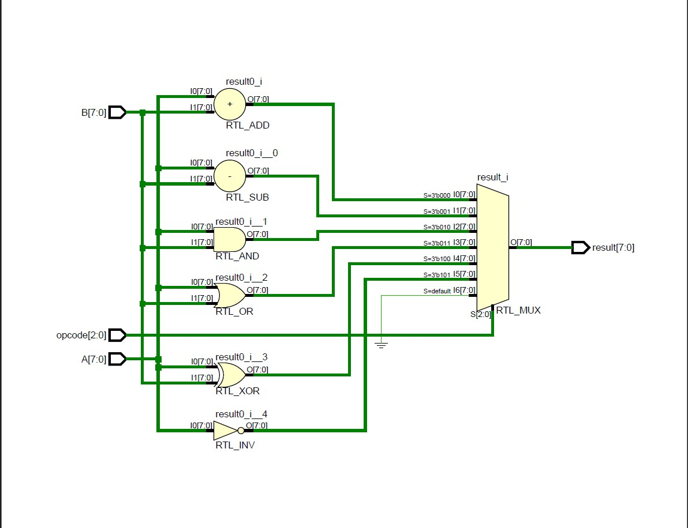
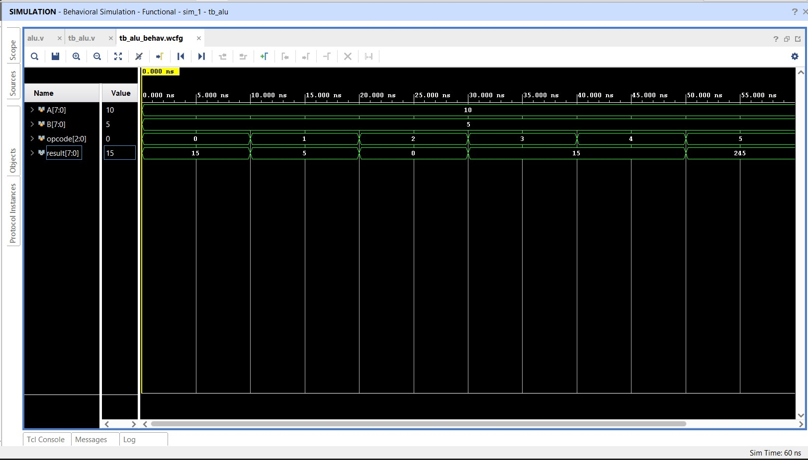
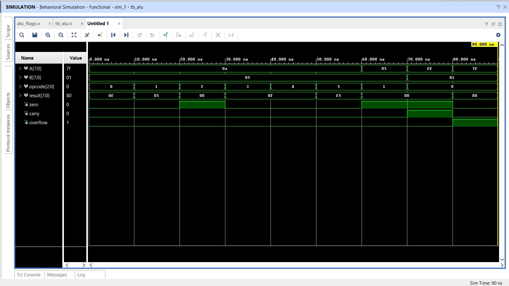
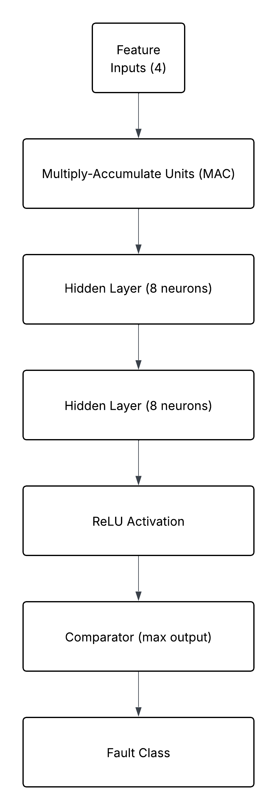

Specializing in RTL Design, FPGA Prototyping, ASIC Design Flows, Digital Architecture, and VLSI Innovation.
SEN.RTL is a semiconductor engineering portfolio and digital design studio focused on RTL development, FPGA implementation, ASIC workflows, hardware architecture, verification methodologies, and silicon innovation.
The platform showcases advanced engineering concepts, interactive demonstrations, and modern VLSI design practices. We design and integrate high-throughput digital cores with strict separation of control and datapath logic, ensuring clock domain crossing safety and optimized propagation delays.
Through structural hardware partitioning and parameterization, our IP blocks are optimized for logic resource utilization and power dissipation. We verify all designs across rigorous directed testbench vectors to achieve timing convergence and timing margin compliance.
Classified hardware design capabilities and verified engineering skill domains.
Synchronous design, state machines (FSM), structural partitioning, datapath/control separation, and parameterization.
Datapath optimization, logic minimisation, clock tree setup/hold analysis, and setup margins.
Self-checking testbenches, directed test vectors, functional coverage, and waveform debugging.
RTL synthesis-aware coding, placement, clock tree synthesis (CTS), power grid analysis, and routing flows.
Critical path delay estimation, setup/hold constraints, timing path margins, and multi-corner timing closure.
Basics of DRC (Design Rule Checking), LVS (Layout vs Schematic), and layout parasitics.
Logic synthesis, routing implementation, timing constraints (.XDC), and integrated logic analyzer debug.
Mapping RTL designs to LUTs, Block RAM blocks, and DSP slices on Xilinx Artix-7/Kintex hardware.
Schematic capture, Spectre simulation, analog VLSI layouts, and digital-analog block integration basics.
Embedded firmware basics, register manipulations, memory management, and algorithm implementation.
Scripting for CAD tool automation, log parsing, test vector generation, and compact device modelling.
Signal processing, Fourier transform spectral analysis, digital filter design, and fixed-point modelling.
Hardware architectures simulated, synthesized, and verified on FPGA platforms.
A 4-stage (Fetch → Decode → Execute → Writeback) pipelined ALU designed in Verilog HDL, matching the RV32I execution specifications. Built to optimize throughput, it uses pipeline registers at stage boundaries to eliminate combinational feedback, reduce critical path delay, and maintain timing compliance.


A high-speed parameterized N-bit barrel shifter supporting Logical Left (LSL), Logical Right (LSR), and Arithmetic Right (ASR) operations. Built using a cascaded 2-to-1 MUX tree ($log_2 N$ levels) to complete shifts in a single clock cycle, eliminating serial iteration loops.

An FPGA-optimized 2D systolic array core in SystemVerilog designed for hardware-accelerated tensor matrix operations. Composed of modular processing element (PE) nodes with Multiply-Accumulate (MAC) circuits and local registers to maximize spatial data reuse.

Writing high-speed, parameterized, synthesis-friendly IP cores with modular logic partition standards.
Mapping pipelines to reconfigurable logic, deploying memory structures, and optimizing LUT/DSP usage.
Synthesis, floorplanning, placement, clock tree synthesis (CTS), routing layout, and static timing closures.
Analyzing processing architectures, open-ISA RISC-V datapaths, and emerging-materials neuromorphic cores.
Designing synthesizable modules, parameterized buses, finite state controllers, and self-checking simulation benches.
Executing logic synthesis constraints, standard cell layouts, floorplan partitioning, and timing margin setup/hold constraints.
Writing Python CAD automation scripts for log/waveform analysis, and MATLAB routines for spectral filtering and DSP modeling.
Access local profile registers directly. Type help to see available commands.
========================================================
SEN.RTL BOARD CONTROLLER CONSOLE (v1.0.0)
========================================================
Target hardware detected: SEN_RTL_CORE_V1
Clock Status: OK | Regs Locked | Ready for input
Type 'help' and press Enter to list commands.
Open to engineering collaborations, digital design projects, semiconductor research initiatives, and technology consulting.